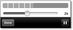

Zum Online-Shop
Zum Online-Shop
4.4 Texte, Bilder und Töne verwalten
Im Gegensatz zu Computern oder den Smartphones anderer Hersteller besitzen die iOS-Geräte keine Hardware-Tastatur. Stattdessen zeigt das Gerät eine Tastatur auf dem Bildschirm an, und der Touchscreen empfängt die Tastendrücke. Bei diesem Vorgehen entsteht aber das Problem, dass die Tastatur das Eingabefeld verdeckt. Die Lösung dafür ist eine Verschiebung des Eingabefelds in einen Bereich, den die Tastatur nicht verdeckt.
4.4.1 Die Tastatur betritt die Bühne
Für Texteingaben bietet Cocoa Touch die Klassen UITextField und UITextView an. Während Textfelder für die Eingabe von kurzen, meist einzeiligen Texten gedacht sind, eigenen sich Textviews besonders für mehrzeilige und längere Texte. Das Verhalten beider Klassen ist allerdings sehr ähnlich. Allerdings ist UITextView im Gegensatz zu UITextField nicht von UIControl abgeleitet und versendet somit auch keine Ereignisse.
Die Tastatur verhält sich bei beiden Klassen aber gleich. Wenn Sie ein Textfeld oder einen Textview antippen, fährt die Tastatur vom unteren Bildschirmrand aus.
Das Fototagebuch verwendet für die Texteingabe einen Textview, da die Beschreibung eines Eintrags durchaus ein längerer Text sein kann. Allerdings liegt der Textview so, dass ihn die Tastatur im Hochformat ganz und im Querformat teilweise verdeckt. Der Viewcontroller sollte also dafür sorgen, dass sich der Textview beim Erscheinen der Tastatur an den freien Bereich des Bildschirms anpasst.
Dazu müssen Sie zunächst mitbekommen, wann Sie die Ausmaße des Views verändern müssen. Dafür haben Sie zwei Möglichkeiten. Sie können entweder die Methoden textViewShouldBeginEditing: beziehungsweise textViewDidEndEditing: des Textview-Delegates verwenden, oder Sie arbeiten mit Benachrichtigungen. Die Verwendung der Delegatemethoden ist naheliegend und findet sich in vielen Beispielprogrammen im Web. Aber leider beruht dieser Weg auf einem Denkfehler. Die beiden Methoden informieren Sie über den Beginn beziehungsweise das Ende des Editiervorgangs. Sie informieren Sie aber nicht über das Erscheinen oder Verschwinden der Tastatur. Das ist keine Spitzfindigkeit, denn auf einem iPad mit angeschlossener Hardware-Tastatur zeigt Cocoa Touch die Software-Tastatur nicht an.
| Simulation der Hardware-Tastatur |
|
Sie können das Verhalten Ihrer Apps mit einer angeschlossenen Hardwaretastatur im Simulator testen. Dazu müssen Sie den Menüpunkt Hardware · Hardware-Tastatur simulieren einschalten. Der Simulator zeigt dann keine Tastatur an, wenn Sie auf ein Texteingabeelement klicken. |
Cocoa Touch kann Sie aber auch über das Erscheinen und Verschwinden der Tastatur informieren. Das geschieht über mehrere Benachrichtigungen:
- UIKeyboardWillShowNotification sendet das iOS, bevor die Tastatur erscheint.
- UIKeyboardDidShowNotification wird nach dem Erscheinen der Tastatur gesendet.
- UIKeyboardWillHideNotification wird gesendet, bevor die Tastatur verschwindet.
- UIKeyboardDidShowNotification sendet das iOS nach dem Verschwinden der Tastatur.
Diese Benachrichtigungen verschickt iOS in bestimmten Fällen aber auch bei angeschlossener Hardware-Tastatur, und zwar dann, wenn das Eingabefeld einen Input-Accessory-View verwendet. Damit können Sie zusätzliche Eingabemöglichkeiten an der Tastatur bereitstellen. Da diese aber natürlich nicht an der Hardware-Tastatur vorhanden sind, zeigt Cocoa Touch diesen zusätzlichen View bei angeschlossener Hardware-Tastatur auf dem Display an.
Für die Behandlung der Tastaturanzeige registriert sich die Klasse ItemViewController für zwei Benachrichtigungen in der Methode viewDidAppear:
NSNotificationCenter *theCenter =
[NSNotificationCenter defaultCenter];
[theCenter addObserver:self
selector:@selector(keyboardWillAppear:)
name:UIKeyboardWillShowNotification object:nil];
[theCenter addObserver:self
selector:@selector(keyboardWillDisappear:)
name:UIKeyboardWillHideNotification object:nil];
Listing 4.17 Registrierung für Tastaturbenachrichtigungen
Die Benachrichtigung liefert im Userinfo-Dictionary mehrere Informationen. Über den Schlüssel UIKeyboardFrameEndUserInfoKey können Sie den Rahmen der Tastatur relativ zu den Koordinaten des Fensters ermitteln. Da die Struktur CGRect aber keine Objective-C-Klasse ist, kann ein Dictionary diese Werte nicht direkt aufnehmen. Cocoa Touch verpackt sie deswegen in ein Objekt der Klasse NSValue.
Die Methode keyboardWillAppear: rechnet zunächst dieses Rechteck in das Koordinatensystem des Hauptviews um. Aus diesem Rechteck berechnet sie dann das freie Rechteck oberhalb der Tastatur. Das ist genau der Platz, den der Textview während des Editiervorgangs belegen soll. Sie müssen dieses Rechteck noch in das Koordinatensystem des Superviews des Textviews umrechnen, da ja dessen Frame relativ dazu ist.
- (void)keyboardWillAppear:(NSNotification *)inNotification {
NSValue *theValue = [inNotification.userInfo valueForKey:UIKeyboardFrameEndUserInfoKey];
UIView *theView = self.view;
CGRect theFrame = [theView.window convertRect:
[theValue CGRectValue] toView:theView];
theFrame = CGRectMake(0.0, 0.0, CGRectGetWidth(self.view.frame), CGRectGetMinY(theFrame));
theFrame = [theView convertRect:theFrame toView:textView.superview];
[UIView beginAnimations:nil context:nil];
self.textView.frame = theFrame;
[UIView commitAnimations];
}
Listing 4.18 Koordinatenanpassung beim Erscheinen der Tastatur
| Hinweis |
|
Das Listing verwendet für die Berechnung die Y-Koordinate des Tastaturrechtecks und nicht dessen Höhe. Wenn eine Hardware-Tastatur angeschlossen ist, zeigt Cocoa Touch die Software-Tastatur nicht an. Das Rechteck hat aber trotzdem die volle Größe – also Input-Accessory-View und Software-Tastatur. Der View wird aber nur so weit hoch geschoben, dass nur der Input-Accessory-View zu sehen ist. |
Diese Koordinatenberechnung gibt Listing 4.18 wieder. Darin weist die vorletzte Anweisung das berechnete Rechteck dem Textview als neuen Frame zu. Diese Zuweisung befindet sich in einem Animationsblock, den die Klassenmethoden beginAnimations:context: und commitAnimations: begrenzen.
Mit diesem Konstrukt können Sie sehr einfach implizite Animationen erzeugen. Sie brauchen dabei nur den neuen Wert einer animierbaren Property in einem Animationsblock zu setzen. Cocoa Touch führt dann die notwendigen Schritte für die Animation automatisch durch, indem es zwischen dem alten und dem neuen Wert der Property interpoliert. Das fünfte Kapitel geht aber noch genauer auf Animationen ein.
Die Tastatur verschwindet
Wenn iOS die Tastatur vom Bildschirm entfernt, soll der Textview wieder seine alte Position zugewiesen bekommen. Dieses Rechteck können Sie allerdings nicht über das Tastaturrechteck berechnen. In vielen Fällen müssen Sie sich die ursprünglichen Koordinaten merken. Im Beispielprogramm haben die Ränder des Textviews feste Abstände zu den Rändern seines Superviews. Die Methode keyboardWillDisappear: macht sich diesen Umstand zunutze und berechnet aus den Bounds des Superviews den Frame des Textviews:
- (void)keyboardWillDisappear:(NSNotification *)inNotification {
[UIView beginAnimations:nil context:nil];
textView.frame = CGRectInset(textView.superview.bounds,
10.0, 10.0);
[UIView commitAnimations];
}
Listing 4.19 Koordinatenanpassung beim Verschwinden der Tastatur
Dazu verwendet die Methode die Funktion CGRectInset(). Sie berechnet aus dem angegebenen Rechteck und einem horizontalen sowie vertikalen Abstand ein neues Rechteck. Es liegt innerhalb des ursprünglichen Rechtecks und hat zu diesem jeweils die gewünschten Abstände.
Sie können jetzt beim Ausblenden der Tastatur die ursprünglichen Koordinaten des Textviews wieder herstellen. Aber wie bringen Sie Cocoa Touch dazu, die Tastatur verschwinden zu lassen? Textfelder und Textviews besitzen dafür kein Standardeingabeelement. Viele Apps verwenden dafür die Returntaste mit der Beschriftung Done.
Das Beispielprogramm verwendet hierfür einen Input-Accessory-View, da sich hierdurch mehrere Möglichkeiten bieten. Diesen Hilfsview zeigt Cocoa Touch immer oberhalb der Tastatur an. Das Fototagebuch verwendet dafür eine Werkzeugleiste, aber Sie können auch beliebige andere Views verwenden. Ein eigener Abschnitt innerhalb von Abschnitt 4.6, »Containerviewcontroller«, geht noch genauer auf Werkzeugleisten ein.
Abbildung 4.10 Tastatur mit Input-Accessory-View
Einen Input-Accessory-View müssen Sie getrennt von der View-Hierarchie erstellen und der Property inputAccessoryView des Textfelds oder Textviews zuweisen. In der NIB-Datei des Itemviewcontrollers finden Sie zwei Views der Klasse UIToolBar, wovon der zweite der Input-Accessory-View des Textviews ist. Eine Möglichkeit ist, die Werkzeugleiste über eine Outlet-Property mit dem Viewcontroller zu verbinden und in der Methode viewDidLoad des Controllers den Input-Accessory-View des Textviews zu setzen.
Sie können sich durch einen kleinen Trick dieses zusätzliche Outlet aber sparen. Die Property inputAccessoryView ließe sich ja mit der Werkzeugleiste schon im Interface Builder verbinden, wenn sie eine Outlet-Property wäre. Dieser Mangel lässt sich aber relativ einfach durch eine Kategorie beheben. Das Beispielprojekt enthält dafür die Kategoriedeklaration UITextView(Outlets) in der Datei UITextView+Outlets.h (siehe Listing 4.20).
@interface UITextView(Outlets)
@property(readwrite, retain) IBOutlet UIView *inputAccessoryView;
@end
Listing 4.20 Nachträgliche Deklaration eines Outlets
Eine Implementierung dieser Kategorie ist nicht notwendig. Falls Sie die Kategorie aber erweitern möchten und eine Implementierung für andere Methoden brauchen, sollten Sie die Property dort über @dynamic inputAccessoryView definieren. Wenn Sie jetzt den Verbindungsinspektor des Textviews im Interface Builder öffnen, finden Sie dort auch ein Outlet für den Input-Accessory-View.
Die Werkzeugleiste enthält drei Elemente: Jeweils einen Button zum Sichern und Abbrechen sowie einen unsichtbaren Zwischenraum. Der Zwischenraum sorgt dafür, dass die Werkzeugleiste den Abbrechen-Button an den rechten Rand drückt. Die Buttons sind mit den Action-Methoden saveText: beziehungsweise revertText: verbunden. Beide Methoden lassen dabei die Tastatur über den Aufruf der Methode endEditing: verschwinden.
- (IBAction)saveText:(id)inSender {
[self.view endEditing:YES];
self.item.text = self.textView.text;
[self saveItem];
}
- (IBAction)revertText:(id)inSender {
[self.view endEditing:YES];
self.textView.text = self.item.text;
}
Listing 4.21 Methoden zum Beenden der Texteingabe
4.4.2 Fotos aufnehmen
Neben einem Text kann ein Tagebucheintrag auch ein Bild enthalten. Der Eintrag enthält aber die Bilddaten nicht in einem Attribut. Er verweist über die Relationship media auf weitere Entitäten, die Bilder, Töne oder auch andere Medieninhalte aufnehmen können. Die Entitäten des Typs Medium enthalten nicht nur die Binärdaten des Mediums, sondern auch dessen Medientyp.
Die Vorgehensweise, die Mediendaten von den Daten des Eintrags zu trennen, hat einige Vorteile. Der wichtigste ist, dass die Mediendaten nicht automatisch mit den Eintragsdaten geladen werden müssen. Die Bild- und Tondaten belegen selbst in komprimierter Form schnell einige hundert Kilobyte, was bei einem größeren Tagebuch schnell zu Laufzeit- und Speicherproblemen führen kann. Außerdem ist diese Struktur flexibel. Sie können relativ einfach neue Medientypen (z. B. für Videos) hinzufügen, ohne das Datenmodell ändern zu müssen. Vielleicht wollen Sie die App auch so verändern, dass sie mehrere Bilder pro Tagebucheintrag speichern kann. Auch das lässt sich über diese Struktur relativ einfach verwirklichen.
In der hier vorgestellten Version gibt es aber zu jedem Medientyp nur jeweils ein Medienobjekt pro Eintrag. Deshalb besitzt die Klasse DiaryEntry zwei Methoden, die den Zugriff über den Medientyp erlauben. Die Methode mediumForType: liefert zu einem Medientyp das passende Objekt, während die Methode removeMediumForType: das zum Medientyp passende Objekt löscht. Außerdem gibt es noch eine Methode zum Hinzufügen und Entfernen eines Mediums. Diese vier Methoden sind dank Core Data mit wenigen Codezeilen wie folgt implementiert:
- (Medium *)mediumForType:(NSString *)inType {
for(Medium *theMedium in self.media) {
if([[theMedium type] isEqualToString:inType]) {
return theMedium;
}
}
return nil;
}
- (void)removeMediumForType:(NSString *)inType {
Medium *theMedium = [self mediumForType:inType];
[self removeMedium:theMedium];
}
- (void)addMedium:(Medium *)inMedium {
if(inMedium != nil) {
[self removeMediumForType:inMedium.type];
[self addMediaObject:inMedium];
}
}
- (void)removeMedium:(Medium *)inMedium {
if(inMedium != nil) {
inMedium.diaryEntry = nil;
[self.managedObjectContext deleteObject:inMedium];
}
}
Listing 4.22 Verwaltung der Medien über den Tagebucheintrag
Damit haben Sie die Grundlage für die Verwaltung der Medien eines Tagebucheintrags. Diese Implementierung stellt sicher, dass es immer nur maximal ein Medium eines Typs zu einem Eintrag gibt. Wenn Sie beispielsweise ein zweites Foto zu einem Eintrag über die Methode addMedium: hinzufügen, löscht sie automatisch den vorhandenen Eintrag.
Zugriff auf die Kamera
Sie können über die Klasse UIImagePickerController relativ einfach Bilder oder Filme aufnehmen. Diese Klasse ist ein fertiger Viewcontroller, den Sie nur noch konfigurieren und anzeigen müssen. Außerdem müssen Sie natürlich nach der Auswahl oder Aufnahme das Bild zum Tagebucheintrag hinzufügen.
Der Imagepicker unterstützt drei Eingabequellen:
- UIImagePickerControllerSourceTypeCamera:
die im Gerät eingebauten Kameras - UIImagePickerControllerSourceTypeSavedPhotosAlbum:
das Fotoalbum mit den Aufnahmen der Kamera – also eine virtuelle Filmpatrone der Kamera. Wenn das Gerät keine Kamera besitzt, zeigt der Controller alle Alben des Geräts an. - UIImagePickerControllerSourceTypePhotoLibrary:
alle auf dem Gerät vorhandenen Fotoalben inklusive der Filmpatrone, sofern das Gerät eine Kamera besitzt.
Wenn Sie den Imagepicker verwenden möchten, sollten Sie zuerst prüfen, ob das Gerät die gewünschte Eingabequelle besitzt. Falls Sie diesen Schritt unterlassen, kann der Zugriff auf eine nicht vorhandene Quelle zum Absturz Ihrer App führen. Die Klasse UIImagePickerController stellt für den Test die Klassenmethode isSourceTypeAvailable: bereit. Sie übergeben ihr als Parameter eine der drei oben aufgeführten Konstanten und erhalten YES als Ergebnis, wenn die entsprechende Quelle existiert. Für die Anzeige des Controllers setzen Sie die Eingabequelle und bringen ihn als modalen Viewcontroller zur Anzeige. Das Beispielprogramm erzeugt den Imagepicker in der Methode viewDidLoad und hält diesen über die Property imagePicker. Es setzt außerdem die Property allowsEditing, damit Sie die Größe und den Ausschnitt der Bilder im Picker bearbeiten können (siehe Listing 4.24).
Modale Viewcontroller und Popover
Auf einem iPhone oder einem iPod müssen Sie den Imagepicker als modalen View anzeigen, während Sie auf dem iPad ein Popover dafür verwenden müssen. Sie haben hierfür leider keine Wahl (und deshalb aber auch keine Qual).
| Modale Dialoge |
|
Ein modaler Dialog sperrt alle anderen Eingabemöglichkeiten einer Applikation. Sie müssen zuerst diesen Dialog bearbeiten, bevor Sie mit der Applikation weiterarbeiten können. Typische modale Dialoge unter OS X sind die Dateiauswahlboxen. Beispiele für nichtmodale Dialoge unter OS X sind die Dateiinformationsfenster des Finders. Auf dem iPhone sperrt ein modaler Dialog alle anderen Eingaben des Viewcontrollers, der ihn anzeigt, indem er ihn komplett verdeckt. Das geht auch auf dem iPad. Allerdings muss er dort nicht den ganzen Bildschirm bedecken. |
- (void)showPickerWithSourceType:
(UIImagePickerControllerSourceType)inType
barButtonItem:(UIBarButtonItem *)inItem {
if([UIImagePickerController isSourceTypeAvailable:inType]) {
self.imagePicker.sourceType = inType;
if(self.popoverController == nil) {
[self presentModalViewController:self.imagePicker
animated:YES];
}
else if(!self.popoverController.popoverVisible) {
[self.popoverController
presentPopoverFromBarButtonItem:inItem
permittedArrowDirections:
UIPopoverArrowDirectionAny
animated:YES];
}
}
}
Listing 4.23 Anzeige des Imagepickers
Abbildung 4.11 Ein Imagepicker in einem Popover
Für die modale Anzeige des Imagepickers verwendet Listing 4.23 die Methode presentModalViewController:animated: aus der Klasse UIViewController. Über diese Methode können Sie beliebige Viewcontroller darstellen. Wie Sie den Imagepicker anzeigen, ist aber abhängig von der Gerätefamilie, auf der Ihre App läuft. Für das iPad verwendet die Methode einen UIPopoverViewController. Das sind die iPad-typischen Fenster mit der Pfeilspitze (siehe Abbildung 4.11).
Über die Property modalTransitionStyle können Sie die Animation für das Erscheinen und Verschwinden des modalen Views festlegen. Die Animation für das Verschwinden ist dabei jeweils entgegengesetzt zu der Animation für das Erscheinen. Es gibt folgende Auswahlmöglichkeiten:
- UIModalTransitionStyleCoverVertical schiebt den Viewcontroller von unten nach oben in den Bildschirm. Das ist die Standardanimation.
- UIModalTransitionStyleFlipHorizontal dreht die Views an der zentralen, vertikalen Achse umeinander, wie Sie es vielleicht schon von den Dashboard-Widgets kennen.
- UIModalTransitionStyleCrossDissolve blendet den aktuellen View aus und gleichzeitig den modalen View durch einen Überblendeffekt ein.
- UIModalTransitionStylePartialCurl rollt den aktuellen View wie das oberste Blatt eines Kalenders nach oben.
Das Fototagebuch legt den Transitionstyp schon bei der Erzeugung des Imagepickers fest:
self.imagePicker = [[[UIImagePickerController alloc] init]
autorelease];
self.imagePicker.allowsEditing = YES;
self.imagePicker.modalTransitionStyle =
UIModalTransitionStyleFlipHorizontal;
self.imagePicker.delegate = self;
Listing 4.24 Erzeugung des Imagepickers
Nach der Auswahl oder Aufnahme eines Bildes müssen Sie die Anzeige des Dialogs beenden. Dazu verwenden Sie die Methode dismissModalViewControllerAnimated:. Sie können diese Methode entweder beim Viewcontroller des modalen Views oder bei dem Viewcontroller aufrufen, der den modalen Dialog geöffnet hat.
Den Imagepicker können Sie auf dem iPad nicht über einen modalen Dialog anzeigen lassen. Sie müssen stattdessen ein Popover verwenden, die es aber nur auf dem iPad gibt. Ein Popover zeichnet einen schwarzen Rahmen mit einer Pfeilspitze um den View. Die Pfeilspitze zeigt in der Regel auf den View, über den Sie das Popover geöffnet haben. Wenn Sie den Bildschirm außerhalb des Popovers berühren, schließt iOS das Popover. Dieses Verhalten können Sie verhindern, indem Sie die Property modalInPopover auf YES setzen.
Das Fototagebuch erzeugt den Controller für das Popover nur, wenn Sie es auf einem iPad starten. Für diese Unterscheidung können Sie die Property userInterfaceIdiom des Singletons UIDevice auswerten. Die entsprechende Logik dazu finden Sie in viewDidLoad:
if([[UIDevice currentDevice] userInterfaceIdiom] ==
UIUserInterfaceIdiomPad) {
self.popoverController = [[[UIPopoverController alloc]
initWithContentViewController:self.imagePicker]
autorelease];
}
Listing 4.25 Erzeugung des Popovercontrollers
Für die Anzeige des Popovers gibt es zwei Möglichkeiten. Entweder geben Sie einen Button aus der Navigationsleiste oder der Tabbar an, auf den die Nase zeigen soll. Diese Variante verwendet Listing 4.23. Alternativ können Sie aber auch dafür einen View mit einem Rechteck angeben. Außerdem müssen Sie mögliche Richtungen angeben, in die die Spitze zeigen darf.
| Tipp |
|
Sie sollten für die Ausrichtung der Pfeilspitze immer sinnvolle Werte angeben. Andernfalls kann Cocoa Touch das Popover schon mal an ungewöhnlichen Stellen positionieren. Am einfachsten verwenden Sie die Konstante UIPopoverArrowDirectionAny. Dann wählt iOS automatisch eine geeignete Ausrichtung. |
Im Gegensatz zum modalen View des Imagepickers auf dem iPhone oder iPod schließt das iPad das Popover automatisch, wenn Sie ein Bild auswählen oder den Dialog abbrechen. Falls Sie einen eigenen View in einem Popover darstellen, können Sie es über die Methode dismissPopoverAnimated: schließen.
Verarbeitung von Aufnahmen
Der Imagepicker bietet für die Verarbeitung der Aufnahmen das Delegateprotokoll UIImagePickerDelegate an. Über die Methode imagePickerControllerDidCancel: teilt der Controller Ihnen mit, dass der Anwender die Aufnahme beziehungsweise Bildauswahl abgebrochen hat. Nach einer Aufnahme oder Bildauswahl ruft der Imagepicker die Delegatemethode imagePickerController: didFinishPickingMediaWithInfo: auf. Dabei übergibt der Picker im zweiten Parameter ein Dictionary mit dem Bild und anderen Daten. Für die Einträge im Dictionary gibt es vordefinierte Konstanten:
- UIImagePickerControllerMediaType enthält den Medientyp der Aufnahme. Dieser Wert entspricht einer der Konstanten kUTTypeImage (Bild) oder kUTTypeMovie (Film).
- UIImagePickerControllerOriginalImage enthält das unbearbeitete Bild der Klasse UIImage der Aufnahme.
- UIImagePickerControllerMediaMetadata enthält ein weiteres Dictionary mit Metadaten des Bildes. Diesen Eintrag unterstützen aber nur die iOS-Versionen ab 4.1.
- UIImagePickerControllerMediaURL existiert auch erst seit iOS 4.1 und nur, wenn Sie ein Bild aus Ihren Fotoalben ausgewählt haben. Dieser Eintrag enthält eine URL auf den Eintrag des Fotoalbums, den Sie ausgewählt haben.
Wenn Sie das Bearbeiten der Bilder im Imagepicker erlaubt haben, erhalten Sie noch Einträge über die Ausschnittsauswahl:
- UIImagePickerControllerEditedImage enthält das bearbeitete Bild der Aufnahme – also den vom Anwender gewählten Ausschnitt.
- UIImagePickerControllerCropRect enthält ein CGRect in einem NSValue-Objekt mit dem Auswahlrechteck.
Das Fototagebuch liest in der Delegatemethode das bearbeitete Bild aus und wandelt es in JPEG-Daten um. Dazu verwendet es die Funktion UIImageJPEGRepresentation, die zwei Parameter hat. Der erste ist das UIImage-Objekt, aus dem die Funktion die JPEG-Daten erzeugen soll. Der zweite Parameter ist ein Fließkommawert zwischen 0 (niedrig) und 1 (hoch), der die Bildqualität nach der JPEG-Komprimierung beschreibt. Die Funktion liefert ein Objekt der Klasse NSData zurück, die eine Hülle für Bytearrays ist.
Sie können dieses NSData-Objekt der Property data einer Entität der Klasse Medium zuweisen. Im Beispielprogramm passiert das in der Methode updateMediumData:withMediumType:, die das Programm auch für die Speicherung der Audiodaten verwendet:
- (void)updateMediumData:(NSData *)inData
withMediumType:(NSString *)inType {
if(inData.length == 0) {
[self.item removeMediumForType:inType];
}
else {
Medium *theMedium = [NSEntityDescription
insertNewObjectForEntityForName:@"Medium"
inManagedObjectContext:self.managedObjectContext];
theMedium.type = inType;
theMedium.data = inData;
[self.item addMedium:theMedium];
}
[self saveItem];
}
Listing 4.26 Speicherung von Mediendaten
Die Tabellenansicht des Fototagebuchs stellt die Aufnahmen in einem kleineren Format (60 × 60 Pixel) dar. Die App erzeugt die Bilddaten für dieses Icon, indem sie das Bild entsprechend verkleinert. Die Entität DiaryEntry besitzt eine Property icon, in der sie diese Bilddaten ablegt.
Die Skalierung des Bildes geschieht über zwei Methoden der Kategorie UIImage(ImageTools). Die Methode sizeToAspectFitInSize: berechnet die Größe für das Bild, sodass das Bild komplett in die angegebene Größe passt. Die berechnete Bildgröße besitzt dabei das gleiche Seitenverhältnis wie das Bild.
- (CGSize)sizeToAspectFitInSize:(CGSize)inSize {
CGSize theSize = self.size;
CGFloat theWidthFactor = inSize.width / theSize.width;
CGFloat theHeightFactor = inSize.height / theSize.height;
CGFloat theFactor = fmin(theWidthFactor, theHeightFactor);
return CGSizeMake(theSize.width * theFactor,
theSize.height * theFactor);
}
Listing 4.27 Größenberechnung mit festem Seitenverhältnis
Die Methode in Listing 4.27 berechnet jeweils den Skalierungsfaktor, um das Bild auf die Breite beziehungsweise die Höhe des Zielrechtecks zu bringen. Wenn Sie das Rechteck mit diesen beiden Faktoren skalieren, entstehen zwei neue Rechtecke, von denen eines genau die Breite und das andere genau die Höhe des Zielrechtecks hat. Von diesen beiden Rechtecken passt nun genau das mit dem kleineren Skalierungsfaktor in das Zielrechteck.

Abbildung 4.12 Größenberechnung mit festem Seitenverhältnis
Sie können ein Beispiel dafür in Abbildung 4.12 sehen. Das Seitenverhältnis der Breite des Zielrechtecks zu der Breite des Bildrechtecks ist dreiviertel und analog für die Höhen anderthalb. Wie Sie an der Abbildung sehen können, passt genau das Rechteck mit dem kleineren Skalierungsfaktor in das Zielrechteck.
Die Methode scaledImageWithSize: der Kategorie berechnet ein skaliertes Bild, das genau die angegebene Größe hat. Dafür verwendet sie Core-Graphics-Funktionen und einen Image-Kontext.
- (UIImage *)scaledImageWithSize:(CGSize)inSize {
CGRect theFrame = CGRectMake(0.0, 0.0, inSize.width, inSize.height);
UIImage *theImage;
UIGraphicsBeginImageContext(inSize);
[self drawInRect:theFrame];
theImage = UIGraphicsGetImageFromCurrentImageContext();
UIGraphicsEndImageContext();
return theImage;
}
Listing 4.28 Skalierung eines Bildes
In Listing 4.28 sehen Sie die Implementierung dieser Methode. Sie erstellt über die Funktion UIGraphicsBeginImageContext() einen Image-Kontext in der gewünschten Größe. Einen Image-Kontext können Sie genau wie einen Grafikkontext verwenden, den Sie bereits im letzten Kapitel kennengelernt haben. Die Funktion liefert allerdings den CGContextRef-Verweis nicht direkt zurück. Sie müssen ihn über die Funktion UIGraphicsGetCurrentContext() ermitteln. Core Graphics verwaltet seine Kontexte in einem Stack, weswegen Sie den Image-Kontext über die Funktion UIGraphicsEndImageContext() am Ende der Methode wieder freigeben müssen. Das Bild zeichnen Sie über die Methode drawInRect: in den Grafikkontext. Die Funktion UIGraphicsGetImageFromCurrentImageContext() des UIKits wandelt schließlich diesen Grafikkontext wieder in ein Bild um.
4.4.3 Töne aufnehmen und abspielen
Im Gegensatz zu Bildern und Videos gibt es unter iOS keine grafische Standardkomponente für die Aufnahme von Tönen. Dieser Abschnitt beschreibt eine mögliche Umsetzung eines einfachen Controllers für diesen Zweck.
Subviewcontroller
Wenn Sie den View eines Viewcontrollers anzeigen möchten, dann geschieht das über die Controllerschicht. Sie haben dafür bereits drei Möglichkeiten kennengelernt. Den Viewcontroller des Startviews Ihrer App legen Sie über die Property rootViewController der Klasse UIWindow fest. Modale Dialoge können Sie auf dem iPhone über presentModalViewController:animated: anzeigen und auf dem iPad auh über Popovercontroller. Cocoa Touch bietet aber noch weitere Möglichkeiten, die Sie im Verlauf des Buches kennenlernen werden.
| Viewcontroller und die Verwaltung von Subviews |
|
Die Views der Unterklassen von UIViewController sollten Sie immer über die Controllerschicht anzeigen lassen (z. B. als modalen Dialog).
Bei iOS-Versionen vor 5 sollten Sie diese Views nicht selber direkt über addSubview: oder insertSubview-Methoden in die Viewhierarchie einfügen. Dieses Vorgehen ist unsauber, da dadurch
die Methoden des Anzeigezyklus des Viewcontrollers nicht aufgerufen werden.
|
Ein Viewcontroller verwaltet immer den kompletten View, der an ihm hängt. Es gibt aber häufig Fälle, in denen Sie eine feinere Unterteilung haben möchten. Ein typisches Beispiel sind Subviews, die Sie in unterschiedlichen Hauptviews verwenden möchten. Ein anderes Beispiel sind Controller, die ihren Hauptview in mehrere Einheiten unterteilen.
Für die Verwaltung solcher Subviews sollten Sie – zumindest bis iOS 5 – keine Unterklassen von UIViewController verwenden. Sie können dafür aber Unterklassen von NSObject erstellen. Das Beispielprogramm enthält zwei Controller für die Anzeige und Verwaltung von Subviews. Der eine ist für die Aufnahme und der andere für das Abspielen von Tönen zuständig. Die gemeinsamen Eigenschaften der Controller fasst deren Oberklasse SubviewController zusammen.
Die Klasse ahmt über die Propertys view und nibName sowie die Methode loadView den Lademechanismus der Klasse UIViewController nach. Das ist nicht unbedingt notwendig, aber auch nicht sehr aufwendig (siehe Listing 4.29). Sie können den View dieser Subviewcontroller aber auch über ein Outlet setzen.
- (NSString *)nibName {
if(nibName == nil) {
self.nibName = NSStringFromClass([self class]);
}
return nibName;
}
- (UIView *)view {
if(view == nil) {
[self loadView];
}
return view;
}
- (void)loadView {
NSBundle *theBundle = [NSBundle mainBundle];
[theBundle loadNibNamed:self.nibName owner:self options:nil];
}
Listing 4.29 View-Lademechanismus für Subviewcontroller
Der Controller implementiert die beiden Propertys als Lazy-Getter, wobei er für den Namen der NIB-Datei der Namen der Controller-Klasse zurückgibt, wenn Sie keinen Namen gesetzt haben. Die Methode loadView lädt die NIB-Datei über die Methode loadNibNamed:owner:options: der Klasse NSBundle. Dabei verwendet sie den Controller als Eigentümer. Da ein Outlet den View mit der Property view des File’s Owners verbindet, setzt dieser Methodenaufruf implizit den View des Controllers.
Über die Methode addViewToViewController: können Sie den View des Subviewcontrollers zu dem View eines beliebigen Viewcontrollers hinzufügen. Der Controller steuert die Sichtbarkeit des Subviews über dessen Alpha-Wert, der eine Fließkommazahl ist. Dabei bedeutet der Wert 0, dass der View und alle seine Subviews transparent sind und keine Berührungen verarbeiten. Ein Alphawert von 1 stellt den View normal dar, und er verarbeitet auch die Berührungen. Sie können die Sichtbarkeit des Subviews über die Property visible und die Methode setVisible:animated: des Subviewcontrollers steuern.
Eigene Delegate-Protokolle erstellen
Außerdem besitzt der Subviewcontroller ein Delegateprotokoll mit zwei Methoden, die er vor dem Ein- beziehungsweise Ausblenden des Subviews aufruft. Das Protokoll deklariert beide Methoden als optional, sodass das Delegate sie nicht implementieren muss. Der Aufruf der Delegatemethoden erfolgt aus der Methode setVisible: heraus, die Listing 4.30 enthält.
- (void)setVisible:(BOOL)inVisible {
UIView *theView = self.view;
SEL theSelector;
theView.frame = theView.superview.bounds;
if(inVisible) {
theView.alpha = 1.0;
theSelector = @selector(subviewControllerWillAppear:);
[theView.superview bringSubviewToFront:theView];
}
else {
theView.alpha = 0.0;
theSelector = @selector(subviewControllerWillDisappear:);
}
[self clear];
if([self.delegate respondsToSelector:theSelector]) {
[self.delegate performSelector:theSelector
withObject:self];
}
}
Listing 4.30 Aufruf der Delegatemethoden
Die Methode weist dabei der Variablen theSelector abhängig von der neuen Sichtbarkeit den entsprechenden Selektor der aufzurufenden Delegatemethode zu. Sie prüft dann über die Methode respondsToSelector:, ob das Delegate diese Methode auch implementiert. In diesem Fall ruft sie die Methode über performSelector:withObject: des Delegates auf.
Play it again, Sam: Töne abspielen
Im zweiten Kapitel haben Sie bereits eine Möglichkeit kennenlernt, Töne abzuspielen. Diese Wiedergabemöglichkeit ist aber für das Fototagebuch nicht sehr geeignet. Denn Sie benötigen eine URL, die auf die Sounddatei verweist. Die Töne des Fototagebuchs liegen aber in Attributen von Core-Data-Entitäten, für die es keine URLs gibt. Wenn Sie einen Ton über die Funktion AudioServicesPlaySystemSound abspielen, können Sie die Wiedergabe nicht steuern. Sie können die Wiedergabe weder pausieren lassen noch an eine bestimmte Stelle springen. Es ist nur die Wiedergabe des kompletten Tons vom Anfang bis zum Ende möglich.
Über die Klasse AVAudioPlayer des AVFoundation-Frameworks bietet das iOS eine weitere Möglichkeit, Töne wiederzugeben. Zwar ist der Audioplayer auch eine Controllerkomponente, aber er ist kein Viewcontroller. Das Fototagebuch enthält eine Subviewcontroller-Klasse AudioPlayerController, die einen Audioplayer kapselt.
Abbildung 4.13 Der Audioplayer-Controller
Der View des Audioplayer-Controllers zeigt in der Mitte einen Slider an, der die aktuelle Abspielposition wiedergibt. Sie können über den Slider aber auch die Abspielposition wählen. Darüber zeigt er den aktuellen Lautstärkepegel grafisch an. Da die Initialisierung des Audioplayers einige Sekunden benötigen kann, besitzt der View für die Überbrückung der Wartezeit auch noch einen Activityindicator. Die Initialisierung des Audioplayers erfolgt in der Methode startAudioPlayer:
- (void)startAudioPlayer {
NSError *theError = nil;
AVAudioPlayer *thePlayer = [[AVAudioPlayer alloc]
initWithData:self.audioMedium.data error:&theError];
if(thePlayer == nil) {
NSLog(@"playAudio: %@", theError);
self.loading = NO;
}
else {
self.audioPlayer = thePlayer;
thePlayer.delegate = self;
thePlayer.meteringEnabled = YES;
self.time = slider.value;
slider.maximumValue = thePlayer.duration;
self.loading = NO;
[self updateTime:nil];
[self startTimer];
[thePlayer play];
}
[thePlayer release];
}
Listing 4.31 Erzeugung und Initialisierung eines Audioplayers
Im Fehlerfall liefert die Initializer-Methode initWithData:error: im zweiten Parameter einen Verweis auf einen Fehler zurück, und die Variable thePlayer verweist dann auf nil. Da der Controller den Lautstärkepegel anzeigen soll, müssen Sie über die Property meteringEnabled die Messung dieser Werte einschalten.
Die Länge des Tons können Sie über die Property duration des Audioplayers ermitteln, um damit den maximalen Wert des Sliders zu setzen. Da der Controller sowohl den Slider als auch die Anzeige des Lautstärkepegels regelmäßig aktualisieren muss, startet er dafür einen Timer. Die Aktualisierung dieser Werte erfolgt in der Methode updateTime:.
- (void)updateTime:(NSTimer *)inTimer {
NSTimeInterval theTime = self.audioPlayer.currentTime;
[self.audioPlayer updateMeters];
meterView.value =
[self.audioPlayer averagePowerForChannel:0];
slider.value = theTime;
[self updateTimeLabel];
}
Listing 4.32 Aktualisierung der Lautstärkepegel- und Positionsanzeige
Der Audioplayer misst den Lautstärkepegel für jeden Kanal getrennt. Um die aktuellen Werte zu erhalten, müssen Sie zuerst die Methode updateMeters aufrufen, bevor Sie den Wert für die einzelnen Kanäle über averagePowerForChannel: abrufen. Der Rückgabewert dieser Methode liegt zwischen –160 und 0. Die Klasse MeterView rechnet diesen Wert in ihrer Methode drawRect: um und zeichnet abhängig von dem Wert ein Bild flexibler Breite.
- (void)drawRect:(CGRect)inRect {
CGRect theBounds = self.bounds;
CGFloat theValue = theBounds.size.width * self.value / WIDTH;
UIImage *theImage = [UIImage imageNamed:@"meter.png"];
theBounds.size.width += theValue;
[theImage drawAsPatternInRect:theBounds];
}
Listing 4.33 Zeichnen des Lautstärkepegels
Die Methode zeichnet den Balken durch eine gekachelte Darstellung eines Bildes über die Methode drawAsPatternInRect:.
| Tipp |
|
Vielleicht sind Ihnen die abgerundeten Ecken der Lautstärkepegelanzeige aufgefallen. Diese Darstellung können Sie relativ elegant über den Layer des Views realisieren, der eine Property cornerRadius besitzt. Außerdem müssen Sie das Clipping einschalten. Die Klasse MeterView setzt diese Werte in der Methode awakeFromNib. |
|
- (void)awakeFromNib { |
|
Das nächste Kapitel geht genauer auf die Möglichkeiten der Layer ein. |
Die Methode updateTime: aktualisiert außerdem den Wert des Sliders, um die aktuelle Abspielposition anzuzeigen. Sie liest dazu die Zeit über die Property currentTime aus und setzt diesen Wert in die Property value des Sliders.
Aktivitätsanzeige und länger laufende Operationen
Der Audioplayer benötigt für das Laden und Initialisieren der Audiodaten einige Sekunden Zeit. Der Nutzer sollte in dieser Zeit eine Rückmeldung von der App erhalten, dass sie beschäftigt ist. Dazu verwendet sie eine Aktivitätsanzeige; das ist ein View der Klasse UIActivityIndicator.
Abbildung 4.14 Audioplayer mit Aktivitätsanzeige
Sie können die Animation der Anzeige über die Methode startAnimating starten und über stopAnimating stoppen.
- (BOOL)loading {
return activityIndicator.isAnimating;
}
- (void)setLoading:(BOOL)inLoading {
if(inLoading) {
[self.activityIndicator startAnimating];
[toolbar setEnabled:NO];
}
else {
[self.activityIndicator stopAnimating];
[toolbar setEnabled:YES];
}
}
Listing 4.34 Steuerung der Aktivitätsanzeige
Wenn Sie die Property hidesWhenStopped auf YES setzen, zeigt Cocoa Touch den Indikator nur während der Animation an. Einen Indikator ohne Animation versteckt Cocoa also automatisch. Die Animation beginnt aber nicht sofort durch den Aufruf der Methode startAnimating, sondern erst, nachdem die Programmausführung in die Runloop des Threads zurückgekehrt ist. Das können Sie dadurch erreichen, dass Ihr Programm alle Methoden verlässt, die Sie erstellt haben.
Das bedeutet für den Audioplayer, dass Sie Ihre Methoden verlassen müssen, bevor Sie den Audioplayer initialisieren. Das können Sie durch einen verzögerten Aufruf der Methode erreichen:
[self performSelector:@selector(startAudioPlayer)
withObject:nil afterDelay:0.0];
Die Methode perfomSelector:withObject:afterDelay: stellt die Klasse NSObject bereit. Sie ruft die Methode mit dem angegebenen Selektor und dem Parameterobjekt im Empfänger nach der angegebenen Verzögerung auf. Diese Methode fügt den Methodenaufruf immer in die Runloop ein – auch bei einer Verzögerung von 0 Sekunden. Cocoa Touch bekommt so die Möglichkeit, die Animation der Aktivitätsanzeige zu aktivieren.
| Animationen und Zeichnen |
|
Cocoa Touch führt alle Zeichen- und Animationsoperationen über die Runloop aus. Diese Methoden markieren die Objekte für die entsprechende Operation. Wenn die Reihenfolge von diesen Operationen im Zusammenhang mit anderen Operationen wichtig ist, müssen Sie also zwischendurch die Runloop zum Zuge kommen lassen. Sie können dazu im einfachsten Fall die Methode performSelector:withObject:afterDelay: verwenden. Die Methode performSelector:withObject: eignet sich hierfür aber nicht. Wenn Sie allerdings längere Aufgaben ausführen wollen, sollten Sie diese lieber in eigene Threads auslagern. |
Die Rückkehr in die Runloop hat aber noch einen weiteren Nebeneffekt. Da sie den Autoreleasepool verwaltet, veranlasst sie ihn, bei der Rückkehr an alle enthaltenen Objekte ein release zu schicken. Objekte, die nur der Autoreleasepool hält, erleben also den Aufruf der verzögerten Methode nicht. Um die Speicherverwaltung zu vereinfachen, sendet die Methode performSelector:withObject:afterDelay: aber an den Nachrichtenempfänger und das Parameterobjekt automatisch ein retain. Nach der Ausführung der verzögerten Methode bekommen diese beiden Objekte ein release geschickt. Für die Parameter können Sie also ruhig Objekte im Autoreleasepool verwenden.
Wenn die Operation mehr als 3 bis 5 Sekunden dauern kann, sollten Sie diese in einem eigenen Thread ausführen, um den Hauptthread nicht zu blockieren. Eine einfache Möglichkeit eine Methode in einem Hintergrundthread auszuführen, ist die Methode performSelectorInBackground:withObject: der Klasse NSObject. Auch diese Methode hält den Empfänger und das Parameterobjekt im Speicher. Die aufgerufene Methode muss immer einen eigenen Autoreleasepool für die Speicherverwaltung bereitstellen.
Wenn Sie aus dieser Methode Änderungen am View vornehmen möchten, müssen Sie diese Operationen allerdings immer im Hauptthread ausführen. Sie können dazu die Methode performSelectorOnMainThread:withObject:waitUntilDone: verwenden.
| Tipp |
|
Sie können über die performSelector-Varianten auch Methoden ohne Parameter aufrufen. Verwenden Sie dazu einfach den Selektor der Methode und den Parameterwert nil. Wenn Sie mehrere Parameterwerte übergeben möchten, können Sie dafür auch Dictionarys verwenden. |
- (void)startVeryLongTask {
NSDictionary *theParameters = [NSDictionary
dictionaryWithObjectsAndKeys:[NSDate date], @"date",
..., nil];
[self.activityIndicator startAnimating];
[self performSelectorInBackground:@selector(veryLongTask:)
withObject:theParameters];
}
- (void)veryLongTask:(NSDictionary *)inParameters {
NSAutoreleasePool *thePool =
[[NSAutoreleasePool alloc] init];
NSDate *theDate = [inParameters objectForKey:@"date"];
...
[self.textLabel
performSelectorOnMainThread:@selector(setText:)
withObject:theText waitUntilDone:NO];
...
[activityIndicator
performSelectorOnMainThread:@selector(stopAnimating)
withObject:nil waitUntilDone:NO];
[thePool release];
}
Listing 4.35 Starten eines Hintergrundtasks
Listing 4.35 stellt die Ausführung einer Methode in einem eigenen Thread schematisch dar. Der Hintergrundtask führt die Methode veryLongTask: aus. Sie erzeugt in der ersten Zeile den notwendigen Autoreleasepool, den sie in ihrer letzten Zeile auch wieder frei gibt. In ARC-konformem Code verwenden Sie statt der ersten und letzten Zeile natürlich einen Autoreleasepool-Block:
- (void)veryLongTask:(NSDictionary *)inParameters {
@autoreleasepool {
...
}
}
Die Übergabe der Parameter erfolgt über ein Dictionary, das die Methode startVeryLongTask entsprechend verpackt. Die Methode veryLongTask: kann dann die Parameter aus diesem Dictionary wieder auslesen. Die Methode aktualisiert außerdem ein Label und stoppt die Aktivitätsanzeige, bevor sie endet. Diese beiden Aufrufe führt sie über den Hauptthread durch, weil sie ja die Anzeige aktualisieren.
Achtung, Aufnahme: Töne aufzeichnen
Auch für Tonaufnahmen gibt es eine fertige Controller-Komponente in Cocoa Touch. Das ist die Klasse AVAudioRecorder aus dem AVFoundation-Framework. Wie der Audioplayer ist auch der Audiorecorder aber kein Viewcontroller, und Sie müssen dafür selbst eine Bedienungsoberfläche erstellen. Das Fototagebuch besitzt dafür einen Subviewcontroller der Klasse AudioRecorderController für Audio-Aufnahmen, dessen View ähnlich dem View des Audioplayer-Controllers aussieht.
Da Sie bei einer Aufnahme nicht die Aufnahmeposition festlegen können, verwendet der Recorder einen Fortschrittsbalken anstatt eines Sliders. Damit die Audiodaten nicht zu groß werden können, begrenzt der Controller die maximale Aufnahmezeit auf 30 Sekunden, die die Konstante kMaximalRecordingTime festlegt. Sie brauchen also nur den Wert dieser Konstanten verändern, um eine andere maximale Aufnahmezeit festzulegen. Der Fortschrittsbalken zeigt Ihnen während der Aufnahme den Anteil der verbrauchten Aufnahmezeit an.
Abbildung 4.15 Der Audiorecorder-Controller
Der Controller erzeugt den Audiorecorder in der Methode startRecording. Sie müssen bei der Erzeugung eine URL auf eine Datei im Dateisystem angeben, in die der Recorder die aufgenommenen Daten schreibt.
- (void)startRecorder {
NSError *theError = nil;
AVAudioRecorder *theRecorder = [[AVAudioRecorder alloc]
initWithURL:self.fileURL
settings:self.audioRecorderSettings error:&theError];
if(theRecorder == nil) {
NSLog(@"startRecording: %@", theError);
self.preparing = NO;
}
else {
theRecorder.delegate = self;
self.audioRecorder = theRecorder;
if([self.audioRecorder
recordForDuration:kMaximalRecordingTime]) {
[self updateRecordButton];
[self startTimer];
self.preparing = NO;
}
}
[theRecorder release];
}
Listing 4.36 Anlegen und Initialisieren des Audiorecorders
Da Ihre App unter iOS in einer Sandbox läuft, können Sie die Datei nicht einfach irgendwo in das Dateisystem des Geräts schreiben. Sie müssen erst ein Verzeichnis ermitteln, in das Sie die Datei schreiben können. Da Sie die Audiodatei nicht länger speichern müssen, können Sie Datei in das Verzeichnis für temporäre Dateien schreiben. Um das zu ermitteln, verwenden Sie die Funktion NSTemporaryDirectory() aus dem Foundation-Framework.
- (NSURL *)fileURL {
NSString *theDirectory = NSTemporaryDirectory();
return [NSURL fileURLWithPath:
[NSString stringWithFormat:@"%@/recording.caf",
theDirectory]];
}
Listing 4.37 URL-Bestimmung für die Audiodatei
| Dateiablage unter iOS |
|
Sie sollten keine Dateien in das Ressourcenverzeichnis Ihrer App schreiben. Das funktioniert zwar im Simulator, unter iOS ist dieser Ordner aber geschützt. |
Sie müssen dem Audiorecorder bei der Initialisierung außerdem noch das Audioformat beschreiben, in dem Sie aufzeichnen möchten. Hier gibt es eine Fülle von möglichen Parametern, die sich wahrscheinlich nicht alle sinnvoll in einer Methodensignatur unterbringen lassen. Aus diesem Grund bekommt der Initialisierer diese Parameter in einem Dictionary, das die Methode audioRecorderSettings erzeugt. Das Fototagebuch nimmt die Töne mit einem Kanal (Mono) in dem Format IMA 4:1 ADPCM von Apple mit der Sampling-Rate 16000 auf, was einen guten Kompromiss zwischen Qualität und Dateigröße darstellt.
- (NSDictionary *)audioRecorderSettings {
return [NSDictionary dictionaryWithObjectsAndKeys:
[NSNumber numberWithInt:kAudioFormatAppleIMA4],
AVFormatIDKey,
[NSNumber numberWithFloat:16000.0], AVSampleRateKey,
[NSNumber numberWithInt:1], AVNumberOfChannelsKey,
nil];
}
Listing 4.38 Erzeugung der Parameter für die Audioaufnahme
Der Recorder hält die Aufnahme entweder nach 30 Sekunden [20](Das ist der Wert der Konstanten kMaximalRecordingTime in Listing 4.36.) automatisch an oder indem das Programm die Methode pause aufruft. Nach der Aufnahme müssen Sie die Daten aus der Datei in ein NSData-Objekt lesen, wozu Sie den Convenience-Konstruktor dataWithContentsOfURL: verwenden können. Dieses Datenobjekt können Sie dann der bereits besprochenen Methode updateMediumData:withMediumType: übergeben, um es an den Tagebucheintrag anzuhängen. Der Aufruf erfolgt in der Delegatemethode audioRecorder:didRecordToData: im Itemviewcontroller.
Die Aktualisierung der Fortschritts-, der Lautstärkepegel- und der Zeitanzeige erfolgt analog zum Audioplayer über einen Timer.
Ihr Kommentar
Wie hat Ihnen das <openbook> gefallen? Wir freuen uns immer über Ihre freundlichen und kritischen Rückmeldungen.


{kind=link}
{kind=link}
{kind=link}
{kind=link}
{kind=link}